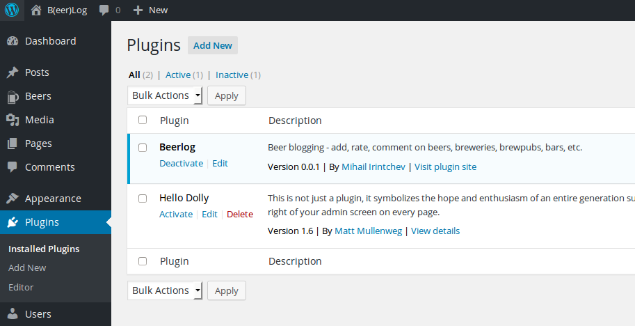
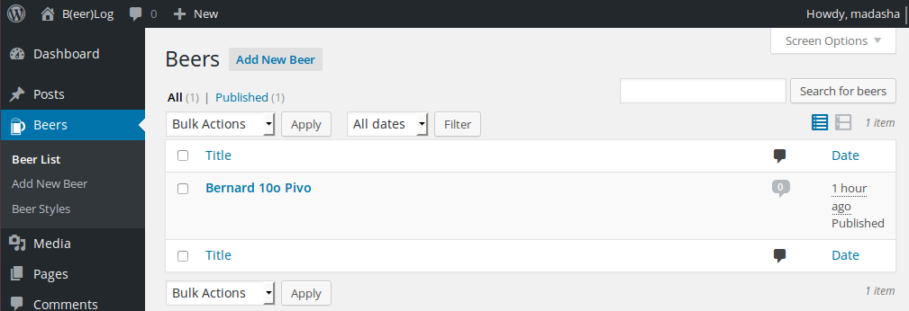
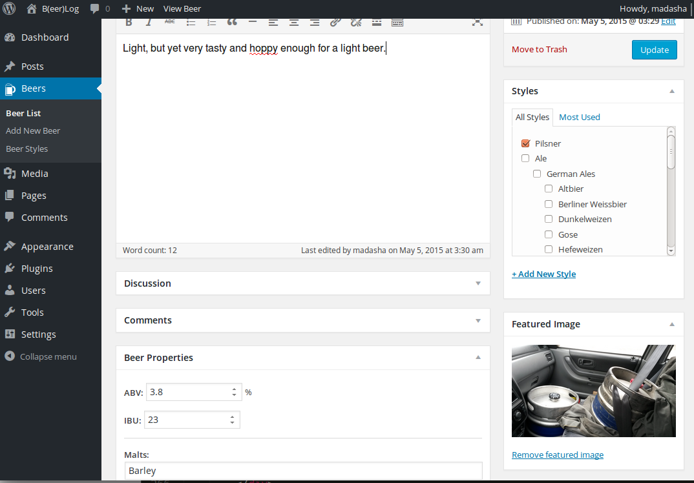

Testing Your WP Plugins:
A (Short) Practical Guide
Created by Mihail Irintchev
Head of Software Development @ SiteGround.com
About me
- From Sofia, Bulgaria
- Web developer since 2003
- Work @ SiteGround
- Organizer of @bgphp UG &
BulgariaPHP Conference - Beer lover
Why test?

1. We are not perfect
2. Computers are great at automation

3. Codex says so
When you're ready to release a new version of the Plugin... Make sure everything is committed and the new version actually works.
Pay attention to all WordPress versions your Plugin supports and try to test it with all of them. Don't just test the new features; also make sure you didn't accidentally break some older functionality of the Plugin.codex.wordpress.org/Writing_a_Plugin
The Tools

Prerequisites:
- php 5.3+
- linux or mac OS (uses
/tmp) - mysql
Warning!
DO NOT do this in production!
Installation: PHPUnit
linux:
wget http://phpunit.de/phpunit.phar
chmod +x phpunit.phar
sudo cp phpunit.phar /usr/local/bin/phpunit
mac:
wget http://phpunit.de/phpunit.phar
chmod +x phpunit.phar
sudo cp phpunit.phar /usr/local/bin/phpunit
wget http://phpunit.de/phpunit.phar
chmod +x phpunit.phar
sudo cp phpunit.phar /usr/local/bin/phpunit
wget http://phpunit.de/phpunit.phar
chmod +x phpunit.phar
sudo cp phpunit.phar /usr/local/bin/phpunit
(Just follow instructions from phpunit.de)
Installation: wp-cli
wget https://raw.github.com/wp-cli/builds/gh-pages/phar/wp-cli.phar
chmod +x wp-cli.phar
sudo cp wp-cli.phar /usr/local/bin/wp
... then in your plugins dir:
wp scaffold plugin-tests yourplugin
./pluginname/bin/install-wp-tests.sh test_db_name db_user db_pass
wp scaffold plugin-tests yourplugin
./pluginname/bin/install-wp-tests.sh test_db_name db_user db_pass
(Just follow instructions from wp-cli.org)
What does wp-cli scaffold plugin-tests basically do for you:
- Creates a
/testsdir with sample test and tests bootstrap file - Creates a
/bindir withinstall-wp-tests.shfile - Creates a
phpunit.xmlfile to configure PHPUnit
What does bin/install-wp-tests.sh do for you:
- Downloads brand new WP and puts it in
/tmp - Fires up a new WP instance using a test DB
- Registers your plugin under test
- Extends the phpunit TestCase class with extra fxn
- Automatically set up/tear down test data
Things to test:
- any business logic/calculations
- install / uninstall (like tables created/dropped)
- activation / deactivation
- custom post types present
- custom post types meta stored
- custom taxonomies and terms
- external assets present and loaded
- plugin headers/readme
How to create your tests
In yourplugin/tests directory there will be a file called test-sample.php
<?php
class SampleTest extends WP_UnitTestCase {
function test_sample() {
// replace this with some actual testing code
$this->assertTrue( true );
}
}
Copy / rename that file and start implementing your tests there
Case study: Beerlog
Beerlog: List beers
Beerlog: Edit beer
Testing custom post type init
<?php
class BeerlogInitTest extends WP_UnitTestCase
{
public function test_beerPostTypeInit()
{
// Assert beer post type set
$postTypes = get_post_types( array( 'public' => true ), 'object' );
$this->assertTrue( isset( $postTypes['beerlog_beer'] ) );
$beerPostType = $postTypes['beerlog_beer'];
// Assert some essential basic properties
$this->assertTrue( $beerPostType->public );
$this->assertTrue( $beerPostType->publicly_queryable );
$this->assertTrue( $beerPostType->show_ui );
$this->assertEquals( 'post', $beerPostType->capability_type );
$this->assertFalse( $beerPostType->hierarchical );
$this->assertTrue( in_array( 'beerlog_style', $beerPostType->taxonomies ) );
// Assert Labels are set properly
$expectedLabels = \Beerlog\Models\Beer::getPostTypeLabels();
$actualLabels = (array) $beerPostType->labels;
foreach ( $expectedLabels as $label => $value ) {
$this->assertEquals( $value, $actualLabels[ $label ] );
}
// Assert basic properties are set properly
$expectedProps = \Beerlog\Models\Beer::getPostTypeProperties();
foreach ( $expectedProps as $propName => $value ) {
$this->assertEquals( $value, $beerPostType->$propName, $propName );
}
}
Testing custom taxonomy and terms
public function test_beerStyleTaxonomyInit()
{
// Assert beer style taxonomy registered
$beerStyleTax = get_taxonomy( 'beerlog_style' );
$this->assertTrue( is_object( $beerStyleTax ) );
// Assert some essential basic properties
$this->assertTrue( $beerStyleTax->hierarchical );
$this->assertTrue( $beerStyleTax->public );
$this->assertTrue( $beerStyleTax->show_ui );
$this->assertTrue( $beerStyleTax->rewrite['hierarchical'] );
$this->assertFalse( $beerStyleTax->rewrite['with_front'] );
// Assert Labels are set properly
$expectedLabels = \Beerlog\Utils\Init::convertArrayToI18n( \Beerlog\Utils\Init::$styleTaxLabels );
$actualLabels = (array) $beerStyleTax->labels;
foreach ( $expectedLabels as $label => $value )
$this->assertEquals( $value, $actualLabels[ $label ] );
}
Testing custom post meta
The Magical WP_UnitTestCase Factory
public function test_renderBeerPostMeta()
{
$beerId = $this->factory->post->create( array( 'post_type' => 'beerlog_beer' ) );
$beerPost = get_post( $beerId );
$expValues = array(
'abv' => rand( 2, 15 ),
'ibu' => rand( 8, 60 ),
);
// TODO: Add all the other meta props
// Set some meta
foreach ( $expValues as $metaName => $metaValue ) {
update_post_meta( $beerId, "_beerlog_meta_{$metaName}", $metaValue );
}
$controller = new \Beerlog\Controllers\Admin;
ob_start();
$controller->renderBeerPropertiesEdit( $beerPost );
$metaHtml = ob_get_contents();
ob_end_clean();
// Assert all meta is present and field values correspond to stored meta data
foreach ( $expValues as $metaName => $metaValue ) {
$escValue = preg_quote( $metaValue, '/' );
$this->assertTrue( (bool) preg_match(
"/id=\"beerlog_meta_{$metaName}\"[^\/]+value=\"{$escValue}\"[^\/]*\/>/imU", $metaHtml
));
}
Few words on OOP and Namespaces
- We do not want to create name-collisions
- Encapsulation is one of the core principles of OOP
- Namespaces introduce an additional level of isolation
- Mocking is way easier
Cool stuff to to check out:
- PHPUnit mocking functionality
- PHPUnit data providers
- Test-Driven Development (TDD)
Even more cool testing stuff
qUnit JS Testing FW

Credits & references
"Unit Testing WordPress Plugins"
by Cal Evans
The PHP Quality Assurance Toolchain
"Browser Eyeballing != JavaScript Testing"
by Jordan Kasper